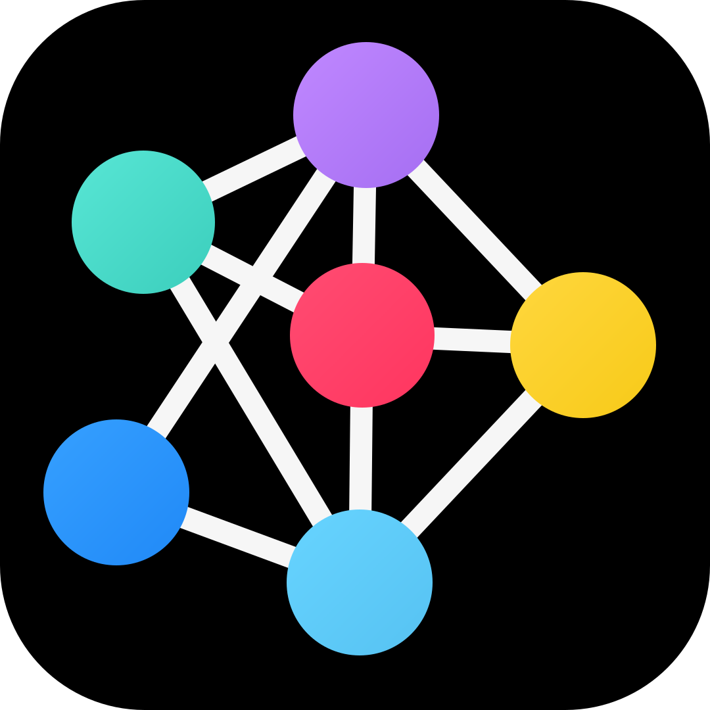

PYTHONSTEP 0 / 0
다음 버튼을 눌러 시작합니다.
1T = int(input())
2
3for test_case in range(1, T+1):
4 board = [list(input()) for _ in range(5)]
5 result = []
6 for c in range(15):
7 for r in range(5):
8 if (len(board[r]) > c):
9 result.append(board[r][c])
10 print(f'#{test_case}', ''.join(result))

← 알고리줌SWEA 5356 · D3
현재 코드 줄과 board 좌표를 함께 따라가며 중첩 반복문을 확인합니다.
다음 버튼을 눌러 시작합니다.
영문·숫자 1~15글자 문자열을 정확히 5줄 입력합니다.
오른쪽 화살표를 눌러 시작합니다.